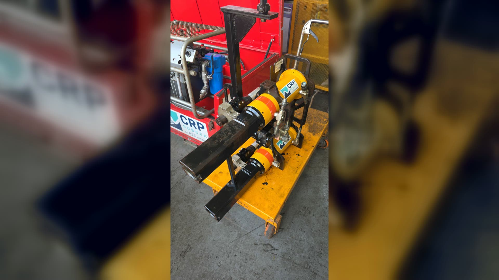
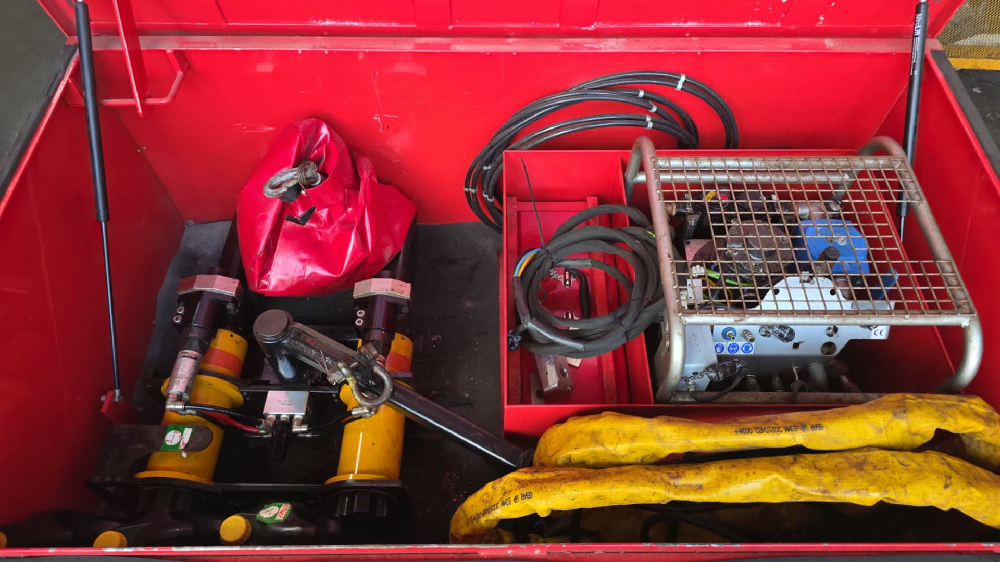

A integridade dos seus equipamentos de torque começa antes da falha.
Programa integrado de gestão da integridade, manutenção, testes, certificação e confiabilidade de equipamentos hidráulicos de torque.
CRP · ferramenta hidráulica de torque subsea
role ou use ↓
O modelo reativo
No modelo tradicional, o equipamento só volta pra manutenção depois que falha.
interrupção de operação
mobilização cara
risco às equipes
perda de produtividade
custos imprevisíveis
sem histórico
baixa rastreabilidade
FALHA NÃO PROGRAMADA
A virada · conceito TIP®
Deixe de consertar. Passe a gerenciar a integridade.
Asset Integrity Management — cada equipamento vira um ativo estratégico, com histórico, plano preventivo e rastreabilidade.
01 Segurança Operacional
02 Engenharia Aplicada
03 Gestão de Ativos
04 Melhoria Contínua
Reativocusto sobe na falha
⟶
TIP®confiabilidade sobe

A jornada do ativo · coração do TIP®
Um fluxo padronizado, do recebimento à expedição.
01
Recebimento
O ativo entra no Centro Técnico e é identificado.
02
Cadastro
Identificação individual e abertura do histórico digital.
03
Inspeção Inicial
Classificação de entrada: Classe A, B, C ou D.
04
Desmontagem
Abertura controlada e registro de cada componente.
05
Limpeza Técnica
Preparação para inspeção dimensional precisa.
06
Inspeção de Componentes
Paquímetros, micrômetros e relógios calibrados.
07
Montagem
Substituição de itens de desgaste e remontagem.
08
Testes Hidráulicos
Pressão e estanqueidade sob condição real.
09
Certificação
Emissão do certificado de desempenho do ativo.
10
Expedição
Ativo pronto, rastreável, de volta à operação.
arraste ou use ←→
PRESSÃO0
TORQUE0
MONITORao vivo
20.000N.m torque máx.
3000bar pressão máx.
±0,25%FS precisão
≥100Hz aquisição
380VAC · 60 Hz
1200kg aprox.
Produto-herói · STTB-01 · Smart Torque Test Bench
O banco que mede o torque REAL aplicado pela ferramenta.
Para validação e certificação de ferramentas hidráulicas de torque — cada componente monitorado, cada ensaio rastreável.
Componentes & sistema · abra um item
Power Pack Hidráulico
Fornece a pressão necessária para operação da ferramenta.
Ferramenta de Torque
Conectada ao sistema hidráulico para aplicação de torque.
Transdutor de Torque
Mede o torque aplicado com alta precisão.Precisão ±0,25% FS (fundo de escala) · Faixa 0 a 20.000 N.m
Bloco de Reação
Absorve o torque gerado pela ferramenta.
Painel Elétrico
Comandos e proteção do sistema.
Sistema de Aquisição de Dados (DAQ)
Coleta e registra os dados de pressão, torque, temperatura e tempo.Frequência ≥ 100 Hz · Canais: Torque, Pressão, Temperatura, Tempo
Instrumentação
Instrumentos calibrados que garantem a medição.
Manômetro Digital · 0,25% FS · 0 a 3000 barTransdutor de Pressão · 0,25% FS · 0 a 3000 barSensor de Temperatura · −40 °C a 150 °C
Software de Ensaio
Curva Pressão × Torque em tempo realRegistro automático dos ensaiosRelatório técnico automático · Gráfico de repetibilidadeEmissão de certificado de desempenho · Armazenamento do histórico
Engenharia de confiabilidade
Cada falha vira aprendizado.
Transformamos dados de operação em decisões de engenharia: análise de causa raiz, banco de dados de falhas e indicadores de vida útil.
Causa raiz
Banco de falhas
MTBF / MTTR
Engenharia preventiva
MelhoriaContínua
01Coleta de Dados
02Inspeção
03Análise de Falhas
04Causa Raiz
05Ação
06Monitoramento
07+ Confiabilidade
Ecossistema digital
Rastreabilidade total, na palma da mão.
QR Code individual · Portal do Cliente GS · Dashboard Executivo · App mobile.
Ativo
Série
Base
Disponibilidade
Horas de operação
Próxima manutenção
CERTIFICADO ✓
Resultados · scorecard executivo
Gestão orientada por desempenho.
0Disponibilidade
0SLA cumprido (Acordo de Nível de Serviço)
0MTTR (Tempo Médio de Reparo)
0Retrabalho
0Certificados no prazo
0NC críticas (Não Conformidade)
MTBF (Tempo Médio Entre Falhas) em tendência +14% · Aprovação na 1ª inspeção ≥95% · Satisfação 98%
Comparativo de valor
Do reparo pontual à gestão contínua do ativo.
Modelo Tradicional
Manutenção corretiva
Histórico limitado
Sem indicadores
Custos imprevisíveis
Baixa rastreabilidade
Programa TIP®
Gestão contínua da integridade
Histórico técnico permanente
KPIs e SLAs auditáveis
Previsibilidade orçamentária
Rastreabilidade digital (QR)
Estrutura interna equivalente ≈ /mês.
Considerando encargos trabalhistas e benefícios associados, o custo de estrutura interna pode chegar a ~80% a mais — até R$ 144 mil/mês.
O investimento
por ativo/mês. Mínimo 10 ativos.
10ativos sob gestão
1020304050 · capacidade
Mensal
Anual

TIP®
Do recebimento até o retorno à operação, a GS cuida da integridade de cada um dos seus ativos.
Desenvolvido por
Capítulo 1 · Quem somos
Setec Marine Service — engenharia de integridade de ativos
Empresa brasileira especializada em engenharia de manutenção, inspeção, certificação e gestão da integridade de equipamentos dos segmentos offshore, óleo & gás, naval, industrial e energia.
Referência nacional em serviços técnicos especializados, unindo engenharia, tecnologia, rastreabilidade e confiabilidade operacional. Corpo técnico altamente qualificado, infraestrutura própria, instrumentos calibrados e procedimentos conforme normas nacionais e internacionais.
Nossos 4 pilares
Segurança Operacional
Engenharia Aplicada
Gestão de Ativos
Melhoria Contínua
Nossa experiência — especialidades
Equipamentos hidráulicos de torque
Sistemas hidráulicos de alta pressão
Thrusters
Bombas FiFi
Redutoras
Guinchos
Guindastes offshore
Movimentação de cargas
Equipamentos de elevação
Sistemas mecânicos rotativos
Atuamos também em recuperação, overhaul, inspeção dimensional, ensaios funcionais, testes hidráulicos e certificação técnica destes equipamentos.
Nossa filosofia · Asset Integrity Management
Manutenção não é apenas reparo. Cada equipamento é tratado como um ativo estratégico: conhecer todo o histórico, identificar tendências de falha, reduzir intervenções corretivas, aumentar disponibilidade, controlar indicadores e fornecer informações para a tomada de decisão. Foi com essa filosofia que nasceu o SETEC Torque Integrity Program (TIP®).
Objetivos do programa
Sete objetivos estratégicos do TIP®
Disponibilidade Operacional
Elevados índices de disponibilidade durante toda a vigência contratual.
Confiabilidade
Aumentar a confiabilidade operacional com manutenção preventiva estruturada.
Segurança
Reduzir riscos com inspeções sistemáticas, testes funcionais e certificações periódicas.
Rastreabilidade
Histórico completo de cada equipamento, da entrada à devolução.
Gestão dos Ativos
Transformar equipamentos individuais em ativos gerenciados por indicadores técnicos.
Padronização
Uniformizar procedimentos de inspeção, desmontagem, montagem, testes e certificação.
Melhoria Contínua
Processo permanente de análise de falhas para elevar a confiabilidade.
O que cada ativo passa a ter
Histórico técnico completo
Identificação individual
Rastreabilidade digital (QR Code)
Plano preventivo e corretivo
Indicadores de desempenho
Certificação técnica
Controle documental
Gestão da vida útil
Capítulos 2 e 3 · Centro Técnico & Metodologia
O fluxo completo do ativo, área por área
Cada equipamento segue obrigatoriamente um fluxo padronizado, documentado e rastreável, monitorado eletronicamente pelo sistema de gestão.
Recebimento→Cadastro→Inspeção Inicial→Desmontagem→Limpeza→Inspeção Componentes→Avaliação→Substituição→Montagem→Testes Hidráulicos→Testes Funcionais→Certificação→Controle de Qualidade→Expedição
Testes hidráulicos na bancada STTB-01 (pressão, carga simulada)
Controle de Qualidade, Certificação & Expedição
Inspeção final independente
Certificado técnico + relatório de inspeção
Atualização do QR Code e do histórico
Conferência, embalagem, registro de saída e liberação
Capítulo 2 · Instrumentação, bancada, segurança e equipe
Infraestrutura técnica do Centro Técnico
Instrumentação calibrada e rastreada
Paquímetros digitais
Micrômetros
Relógios comparadores
Torquímetros calibrados
Manômetros calibrados
Bombas hidráulicas de teste
Instrumentos de medição dimensional
Ferramentas especiais de montagem
Todos os certificados de calibração permanecem disponíveis para auditorias.
Bancada Hidráulica de Testes
Simulação das condições reais de operação
Controle preciso da pressão hidráulica
Monitoramento do desempenho operacional
Testes de vedação
Avaliação da repetibilidade
Verificação da estabilidade operacional
Segurança Operacional
Equipamentos de Proteção Individual (EPIs)
Ferramentas inspecionadas
Procedimentos de bloqueio quando aplicáveis
Checklists de segurança
Inspeções periódicas dos equipamentos de teste
Equipe Técnica
Engenheiro Responsável Técnico
Supervisor de Manutenção
Técnicos Mecânicos Especializados
Inspetores Técnicos
Analista de Qualidade
Técnico de Documentação
Planejamento e Controle da Manutenção (PCM)
Capítulo 5 · Modelo operacional
Programa de Manutenção, Integridade, Testes, Certificação e Treinamento
Uma sistemática integrada para manutenção preventiva, inspeção, testes, certificação, rastreabilidade e confiabilidade dos equipamentos da Baker Hughes.
1. Objetivo
O presente programa tem como objetivo estabelecer uma sistemática integrada para a manutenção preventiva, inspeção, testes, certificação, rastreabilidade e confiabilidade dos equipamentos contemplados no programa da Baker Hughes.
A metodologia será baseada em manutenção preventiva e controle do ciclo de vida dos equipamentos, buscando reduzir falhas, aumentar a disponibilidade operacional, identificar antecipadamente condições de desgaste ou não conformidade e garantir maior confiabilidade durante sua utilização.
O programa será estruturado de forma que as intervenções sejam registradas e rastreáveis, permitindo o acompanhamento do histórico de cada equipamento e a identificação de tendências de desgaste, falhas e necessidades de intervenção.
2. Periodicidade das Manutenções
A manutenção dos equipamentos será realizada considerando três níveis de intervenção, de acordo com a frequência e a criticidade operacional:
2.1. Manutenção a cada retorno de embarque
A cada retorno do equipamento de uma operação ou embarque, será realizada uma inspeção e manutenção preventiva de retorno, independentemente da quantidade de dias de utilização, para identificar eventuais danos, desgastes ou anomalias.
Atividades contempladas:
Inspeção visual geral
Verificação das condições físicas do equipamento
Verificação de vazamentos
Inspeção de mangueiras, conexões, acoplamentos e componentes
Verificação de desgaste, deformações, corrosão ou danos
Limpeza do equipamento
Verificação das condições dos componentes
Verificação funcional básica
Identificação de possíveis não conformidades
Registro fotográfico
Registro da intervenção realizada
Atualização do histórico do equipamento
Emissão de recomendações para manutenção ou substituição, quando aplicável
Cada manutenção será registrada individualmente no histórico. Caso comprometa a segurança ou desempenho, o equipamento poderá ser direcionado para manutenção preventiva mais abrangente ou corretiva.
2.2. Manutenção preventiva a cada 90 dias
Independentemente da quantidade de embarques, os equipamentos passarão por manutenção preventiva periódica a cada 90 dias com caráter mais abrangente para avaliação geral de funcionamento e integridade.
Atividades contempladas:
Inspeção técnica detalhada
Avaliação mecânica e hidráulica
Verificação de componentes e pontos críticos
Inspeção de mangueiras, conexões e circuitos
Verificação de vazamentos
Avaliação de desgaste
Inspeção de vedações, anéis, retentores e itens de desgaste
Verificação das condições de componentes hidráulicos e mecânicos
Testes de pressão e estanqueidade, quando aplicáveis
Testes funcionais
Substituição preventiva de componentes, quando recomendada
Registro fotográfico e das condições encontradas
Identificação e tratamento de não conformidades
Emissão de relatório de manutenção
Atualização do histórico e da rastreabilidade
A manutenção de 90 dias não será substituída pela manutenção de retorno de embarque. Havendo proximidade entre eventos, far-se-á avaliação técnica prévia.
2.3. Manutenção anual com certificação
Uma vez ao ano, será realizada a manutenção completa do equipamento, associada ao processo de inspeção e certificação formal para continuidade operacional.
Atividades contempladas:
Inspeção técnica completa
Desmontagem dos componentes, quando necessária
Limpeza técnica
Inspeção detalhada e dimensional dos componentes
Verificação de desgaste, corrosão e deformações
Avaliação da integridade dos componentes críticos
Inspeção dos sistemas hidráulicos e mecânicos
Substituição de componentes conforme necessidade técnica
Montagem
Testes hidráulicos e funcionais
Testes de pressão e estanqueidade, quando aplicáveis
Controle de qualidade
Registro fotográfico
Emissão do relatório de manutenção e inspeção
Atualização do histórico do equipamento
Emissão da certificação correspondente
A certificação estará vinculada à conclusão satisfatória das inspeções e testes, registrada individualmente no sistema de rastreabilidade.
3. Independência das Periodicidades
As periodicidades deverão ser entendidas como gatilhos independentes de manutenção:
Retorno de embarque: Gera uma inspeção/manutenção de retorno a cada chegada de operação.
A cada 90 dias: Manutenção preventiva periódica programada.
Uma vez ao ano: Manutenção completa associada à certificação.
A ocorrência de uma manutenção não elimina automaticamente a necessidade das demais periodicidades, salvo quando, mediante avaliação técnica e planejamento previamente acordado entre a Setec Marine Service e a Baker Hughes, uma intervenção mais abrangente contemplar integralmente as atividades previstas para outro nível de manutenção.
4. Desenvolvimento da Instrução de Trabalho – IT
Como parte integrante do programa, a Setec Marine Service irá desenvolver, em conjunto com a Baker Hughes, uma Instrução de Trabalho (IT) específica para os equipamentos contemplados, estabelecendo de forma clara e padronizada:
Critérios para utilização dos equipamentos
Inspeções antes e após a utilização
Cuidados durante a operação
Procedimentos de limpeza e conservação
Critérios de armazenamento e transporte
Identificação de danos, desgastes e anomalias
Critérios para retirada do equipamento de operação
Comunicação de não conformidades
Responsabilidades dos usuários
Critérios para acionamento da manutenção
Fluxo de registro das ocorrências
Critérios de rastreabilidade
Periodicidade das manutenções
Orientações relacionadas à certificação
A Instrução de Trabalho será submetida à validação conjunta entre a Setec Marine Service e a Baker Hughes antes de sua implementação.
5. Treinamento da Equipe
Após a elaboração e validação da IT, a Setec Marine Service realizará o treinamento dos colaboradores envolvidos na utilização e gestão dos equipamentos, garantindo que conheçam os procedimentos e estejam aptos a comunicar anomalias. O treinamento contemplará, no mínimo:
Apresentação da Instrução de Trabalho
Orientações sobre utilização correta
Inspeção antes e após a utilização
Cuidados durante a operação
Identificação de vazamentos, desgastes e danos
Cuidados com limpeza, conservação, armazenamento e transporte
Critérios para retirada de operação e comunicação de não conformidades
Registro de ocorrências e responsabilidades dos usuários
Acionamento da equipe de manutenção e periodicidades
Importância da rastreabilidade e do histórico do equipamento
6. Dimensionamento das Turmas
05
Colaboradores por turmaGarante maior qualidade na capacitação, interação e acompanhamento adequado.
Até 50
Colaboradores contempladosTotalizando até 10 turmas de treinamento previstos no programa da Baker Hughes.
Eventual necessidade de treinamento de colaboradores adicionais além dos 50 previstos deverá ser avaliada e tratada comercialmente entre as partes.
7. Registro e Rastreabilidade
Todas as intervenções realizadas durante o programa possuirão registro correspondente. Para cada equipamento, será mantido histórico individual contendo:
Identificação do equipamento
Data e tipo de manutenção realizada
Condições encontradas e serviços executados
Componentes substituídos
Testes realizados e seus resultados
Registros fotográficos e não conformidades
Recomendações técnicas e relatórios
Certificados emitidos e data da próxima manutenção
8. Resultado Esperado
A combinação entre manutenção periódica, inspeção, certificação, padronização e treinamento estabelecerá um sistema integrado de gestão da integridade.
O resultado esperado é o aumento da confiabilidade e disponibilidade dos equipamentos, redução de falhas inesperadas, melhor planejamento das intervenções, maior controle sobre componentes e formação de uma base histórica permanente para o aperfeiçoamento contínuo dos planos de manutenção.
Capítulo 6 · Engenharia de confiabilidade
Cada falha vira dado, cada dado vira decisão
Metodologia de Reliability Engineering (Engenharia de Confiabilidade): compreender as causas das falhas, reduzir sua recorrência e aumentar continuamente a disponibilidade operacional.
Indicadores acompanhados: MTBF (Tempo Médio Entre Falhas) e MTTR (Tempo Médio de Reparo).
Classificação das falhas
Mecânicas
Eixos, mancais, buchas, parafusos, acoplamentos.
Hidráulicas
Vazamentos, danos em vedações, perda de pressão, contaminação do fluido.
Operacionais
Sobrecarga, operação inadequada, uso fora das especificações.
Desgaste natural
Vida útil dos componentes — esperadas e controladas por preventiva.
Investigação da causa raiz
Condições de operação
Histórico do equipamento
Frequência das falhas
Tempo de utilização
Procedimentos executados
Estado dos componentes
Banco de dados de falhas
Cada ocorrência registra: equipamento, data, tipo e local da falha, componentes envolvidos, causa identificada, solução, tempo de reparo, custos e recomendações — base para indicadores e análises estatísticas.
Monitoramento da vida útil & engenharia preventiva
Frequência de substituição
Tempo médio de utilização
Desgaste acumulado e tendência de falhas
Intervalos de inspeção por família
Critérios de substituição de componentes
Recomendações de armazenamento e transporte
Coleta de dados→Inspeção→Análise de falhas→Causa raiz→Plano de ação→Melhorias→Monitoramento→+ Confiabilidade
Capítulo 4 · Portal do Cliente GS
Dashboard Executivo — SETEC TIP®
Acompanhamento em tempo real dos indicadores operacionais do contrato, com suporte à tomada de decisão e ao gerenciamento da disponibilidade dos ativos.
Contract status (exemplo · 50 ativos)
50
Equipamentos cadastrados
47
Disponíveis
2
Em manutenção
1
Em teste
48
Certificados
100%
SLA atendido
98,6%
Disponibilidade operacional
3,4d
Tempo médio de manutenção
Status da frota
94% disponíveis · 4% em manutenção · 2% em testes
Ordens de serviço
Abertas: 3
Em andamento: 2
Concluídas: 187
Aguardando peças: 1
Indicadores acompanhados
MTBF (Tempo Médio Entre Falhas)
MTTR (Tempo Médio de Reparo)
SLA (Acordo de Nível de Serviço)
Disponibilidade
Equipamentos certificados
Custos por ativo
Histórico de falhas
Portal GS · Ativo BH-HST-0018
Histórico permanente do equipamento
Cada ativo possui um cadastro individual com todas as informações técnicas, histórico operacional, certificados e documentação associada — consultável por QR Code.
SLA (Acordo de Nível de Serviço) — o compromisso de prazo e execução da Setec.
100%
Prazo contratual cumprido
98%
Ordens dentro do SLA
3,2d
Tempo médio (meta 5 dias)
Indicadores monitorados
SLA geral
Tempo médio
Disponibilidade
Conformidade
Certificações
O sistema permite acompanhamento contínuo do desempenho contratual e dos indicadores de atendimento. Disponível também no aplicativo mobile — consulta rápida por QR Code de certificados, relatórios, histórico e fotos direto no dispositivo.
Capítulo 8 · KPIs & SLAs
Indicadores de performance e metas
KPI (Indicador-Chave de Desempenho) · SLA (Acordo de Nível de Serviço)
KPI
Meta
Resultado
Status
Disponibilidade Operacional
≥ 98%
99,2%
SLA cumprido (Acordo de Nível de Serviço)
≥ 95%
98,7%
MTTR (Tempo Médio de Reparo)
≤ 4 dias
3,1 dias
MTBF (Tempo Médio Entre Falhas)
Tendência crescente
+14%
Retrabalho
≤ 2%
0,8%
Aprovação na 1ª inspeção
≥ 95%
—
Certificados emitidos no prazo
100%
100%
Não Conformidades Críticas
0
0
Satisfação do Cliente
≥ 95%
98%
Matriz de prioridade de atendimento
Criticidade
Tipo
Prazo máximo
Crítica
Equipamento essencial para operação
Até 48h — diagnóstico e plano de ação
Alta
Equipamento estratégico
Conforme cronograma acordado
Programada
Manutenção preventiva
Conforme planejamento mensal
Baixa
Serviços eletivos
Conforme disponibilidade operacional
Os KPIs são divididos em cinco grupos: Operacionais, Confiabilidade, Qualidade, Atendimento e Gerenciais — consolidados em relatórios gerenciais e no Dashboard Executivo.
Capítulo 7 · Gestão da qualidade
Qualidade presente em todas as etapas
Abordagem preventiva: processos padronizados, procedimentos documentados e controles operacionais que garantem repetibilidade, rastreabilidade e conformidade em cada intervenção.
Como a qualidade é assegurada
Procedimentos Operacionais Padronizados (POPs)
Instruções Técnicas para operações críticas
Checklists por fase (recebimento → final)
Controle de documentos e revisões
Controle metrológico dos instrumentos
Auditorias internas periódicas
Controle de não conformidades
Toda condição fora dos critérios abre uma NC com: descrição, evidências, responsável, causa, ação corretiva, ação preventiva e data de encerramento — tratada por ações corretivas e preventivas para eliminar a causa.
Supervisão estratégica, recursos e avaliação de resultados.
Gerente do Contrato
Ponto focal; coordena atividades, cronogramas, SLAs e riscos.
Engenharia
Procedimentos, critérios técnicos, análise de falhas e confiabilidade.
PCM
Programação de OS, prazos, recursos e indicadores operacionais.
Qualidade
Inspeção final independente, auditorias e controle documental.
Responsável Técnico
Supervisão técnica e emissão de ART (Anotação de Responsabilidade Técnica) quando aplicável.
Matriz de responsabilidades (RACI)
Atividade
Diretor
Gerente
Eng.
PCM
Qual.
Superv.
Planejamento do Contrato
A
R
C
R
I
I
Recebimento dos Equipamentos
I
C
I
R
C
R
Inspeção Técnica
I
I
C
I
C
R
Manutenção
I
C
C
I
I
R
Certificação
I
C
C
I
R
I
Reuniões com o Cliente
A
R
C
C
C
I
R Responsável · A Aprovador · C Consultado · I Informado. Governança em 5 pilares: liderança técnica, planejamento, controle operacional, gestão da qualidade e engenharia de melhoria contínua.
Capacitação contínua da equipe
Atualização em normas técnicas
Treinamentos internos
Procedimentos operacionais
Segurança do trabalho
Metrologia
Boas práticas de manutenção
Gestão da qualidade
Engenharia de confiabilidade
Capítulo 10 · O que o investimento contempla
R$ 27.600 / ativo·mês — uma estrutura completa
Prestação continuada de serviços; mínimo de 10 ativos. Cada ativo incluído no programa conta com:
Gestão Técnica
Cadastro individual · histórico permanente · gestão documental · controle do ciclo de vida · rastreabilidade completa.
Engenharia
Engenharia de Confiabilidade · diagnóstico · análise de falhas · parecer técnico · estudos de melhoria.
Planejamento
Planejamento das manutenções · PCM dedicado · controle dos cronogramas · gestão das OS.
Certificados · relatórios técnicos · histórico fotográfico · banco de dados técnico.
Gestão Digital
QR Code · Dashboard Executivo · KPIs · gestão de SLAs · indicadores · histórico permanente.
Referência financeira
Ativos
Mensal
Anual
10 (mínimo)
R$ 276.000
R$ 3.312.000
20
R$ 552.000
R$ 6.624.000
30
R$ 828.000
R$ 9.936.000
40
R$ 1.104.000
R$ 13.248.000
50 (capacidade)
R$ 1.380.000
R$ 16.560.000
Valor entregue — muito mais que manutenção
Por R$ 27.600/ativo·mês, a Baker Hughes recebe uma estrutura permanente de gestão de ativos:
Engenharia especializada
Planejamento e Controle da Manutenção (PCM)
Gestão da integridade do ativo
Engenharia de confiabilidade
Sistema digital de gestão
Dashboard Executivo e KPIs
Gestão dos SLAs
Banco de dados técnico
QR Code individual
Controle da qualidade
Certificação técnica e relatórios
Histórico permanente
Suporte técnico especializado
Reuniões gerenciais e de performance
Capítulo 10 · Escopo
Serviços não contemplados no investimento
Sempre que identificada a necessidade de qualquer um destes serviços, será emitido relatório técnico com orçamento específico para aprovação prévia da Baker Hughes.
Fornecimento de peças e componentes
Componentes hidráulicos de alto valor
Recuperações estruturais especiais
Soldagens especiais
Usinagem externa
Alterações de projeto
Atualizações determinadas pelo fabricante
Danos ocasionados por acidentes ou uso inadequado
Mobilizações offshore não previstas
Atendimentos emergenciais em campo (contratados separadamente)
Flexibilidade contratual
Novos ativos podem ser incorporados (ou desmobilizados) ao longo da vigência, mediante atualização cadastral, mantendo as mesmas condições técnicas e comerciais desta proposta.
Capítulo 10 · Comparativo de valor
Quanto custaria manter essa estrutura internamente?
Para obter uma estrutura equivalente ao TIP®, seria necessário contratar profissionais especializados, implantar sistemas de gestão e manter infraestrutura técnica dedicada.
Recurso
Custo médio mensal (referencial)
Engenheiro de Confiabilidade
R$ 18.000
Planejador PCM
R$ 10.000
Supervisor Técnico
R$ 14.000
Inspetor Técnico
R$ 9.000
Sistema de Gestão
R$ 5.000
Controle da Qualidade
R$ 8.000
Documentação Técnica
R$ 6.000
Infraestrutura Administrativa
R$ 10.000
Total estimado (salários-base)
R$ 80.000 / mês
Valores de mercado usados apenas para demonstrar a estrutura normalmente necessária.
Custo real com encargos e benefícios
Os valores acima referem-se apenas a salários-base. Considerando encargos trabalhistas e benefícios associados, o custo de uma estrutura interna equivalente pode chegar a ~80% a mais:
Salários-base (estimativa)
R$ 80.000 / mês
+ Encargos trabalhistas e benefícios (~80%)
R$ 64.000 / mês
Custo real estimado
R$ 144.000 / mês
Ou seja: além da complexidade de montar e manter a estrutura, o custo interno real supera com folga o investimento do TIP® — com toda a engenharia, gestão e tecnologia já inclusas.
Modelo tradicional × TIP®
Modelo tradicional
Programa TIP®
Manutenção corretiva
Gestão contínua do ativo
Histórico limitado
Histórico permanente
Baixa rastreabilidade
QR Code individual
Atuação após a falha
Planejamento preventivo
Custos imprevisíveis
Previsibilidade orçamentária
Sem indicadores
KPIs e dashboards
Controle manual
Gestão digital integrada
Foco na manutenção
Foco na disponibilidade operacional
Capítulos 1 e 10 · Benefícios
O que a Baker Hughes ganha com o TIP®
Mais do que um serviço de manutenção, a Baker Hughes recebe uma estrutura permanente de gestão de ativos, com ganhos operacionais e estratégicos diretos.
Benefícios operacionais
Maior disponibilidade dos equipamentos
Redução significativa de paradas não programadas
Diminuição dos custos com manutenção corretiva
Aumento da vida útil dos ativos
Padronização dos processos de manutenção
Histórico técnico individualizado por equipamento
Controle documental centralizado
Rastreabilidade completa por QR Code
Emissão de certificados e relatórios técnicos
Indicadores de desempenho em tempo real
Gestão da integridade baseada em engenharia
Maior previsibilidade operacional
Suporte técnico especializado
Conformidade com auditorias internas e externas
Benefícios estratégicos
Maior previsibilidade orçamentária
Ampliação da vida útil dos equipamentos
Redução do custo total de propriedade (TCO)
Gestão técnica baseada em indicadores
Rastreabilidade completa do histórico dos ativos
Apoio à tomada de decisão por dados confiáveis
Portal GS · Mockup 06 · Aplicativo mobile
Rastreabilidade na palma da mão
Os equipamentos podem ser consultados diretamente em dispositivos móveis, com acesso rápido às informações técnicas, certificados e histórico de manutenção.
Pesquisar equipamento
Busca por identificação — ex.: BH-HST-0018.
Status
Operacional
Última inspeção
15/08/2026
Próxima
15/02/2027
Ações disponíveis no app
Abrir Certificado
Abrir Relatório
Histórico de intervenções
Fotos do equipamento
Leitura de QR Code
Consulta de KPIs
O acesso móvel complementa o Portal do Cliente GS e o Dashboard Executivo, disponíveis durante toda a vigência contratual.